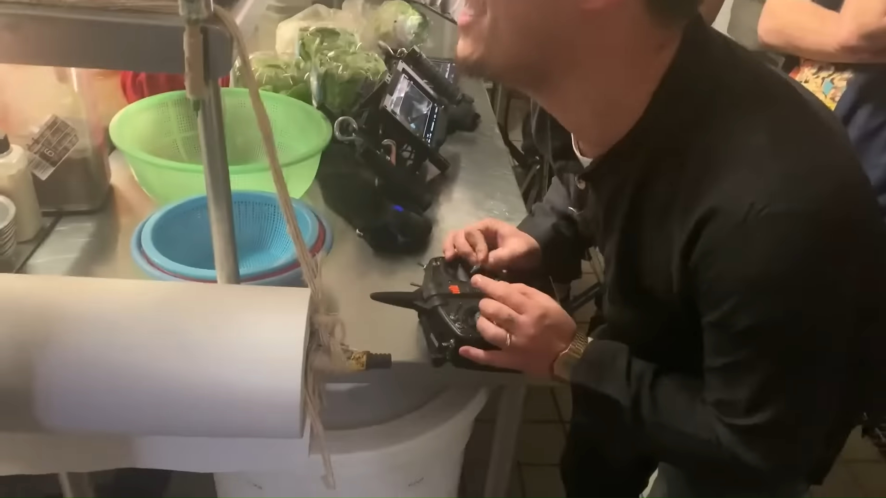
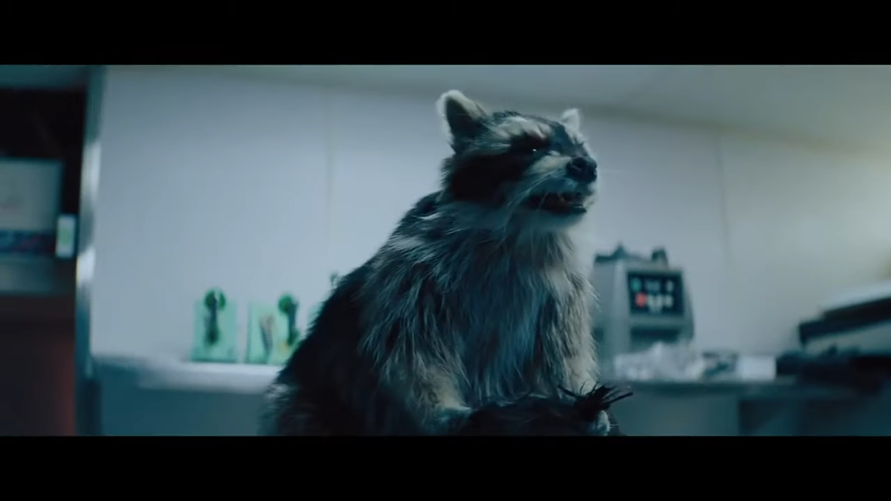
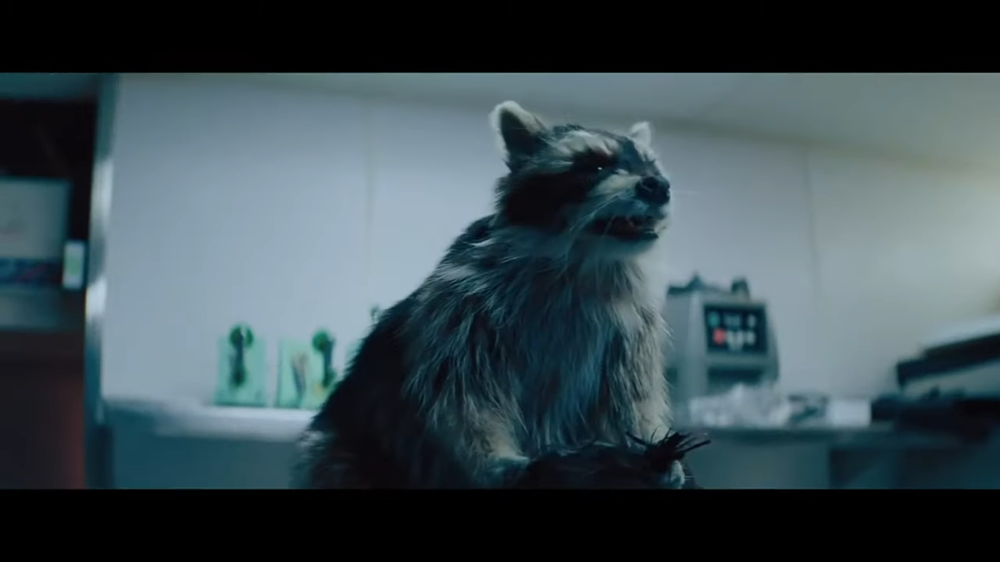

Raccacoonie is a non-original original character from the 2022 sci-fi blockbuster Everything Everywhere All At Once. Halfway through the 2-hour movie, the protagonist – Evelyn – is trying to explain ‘verse-jumping’ to her family, mentioning how the raccoon in ‘Raccacoonie’ controls a human chef by pulling his hair and magically turns him into an excellent cook, as reference point. The movie she is trying to talk about, however, is not titled ‘Raccacoonie’ but rather ‘Ratatouille’. EEAAO goes one step further and, as a joke, creates an entire parallel universe from Evelyn’s mess-up where Raccacoonie does indeed exist.
“‘Raccacoonie’, you know? The one with the chef, and he makes bad food, phooey, and then, this raccoon sit on his head, ooh, control him, and then he cooks good food.”
–Evelyn (Michelle Yeoh), EEAAO
In production of the film, a remote-controlled stuffed raccoon corpse was used as prop for Raccacoonie’s scenes.

 
